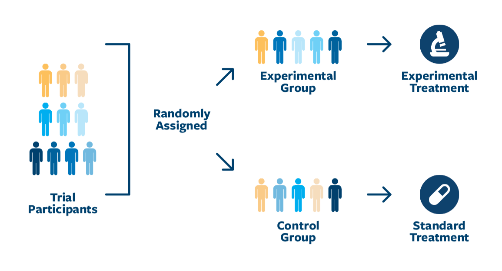
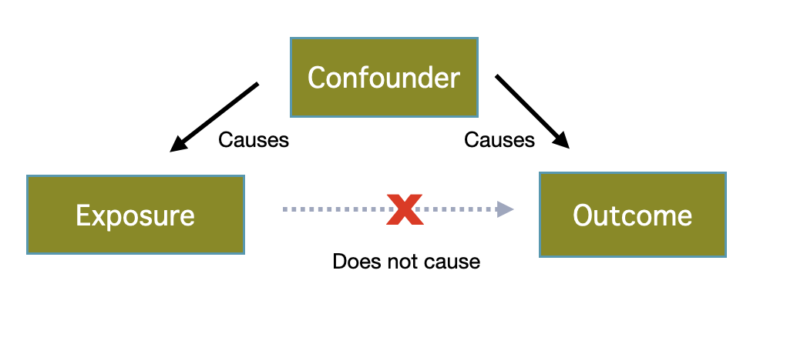
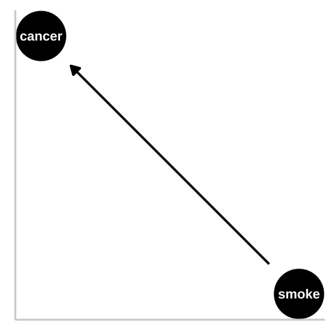
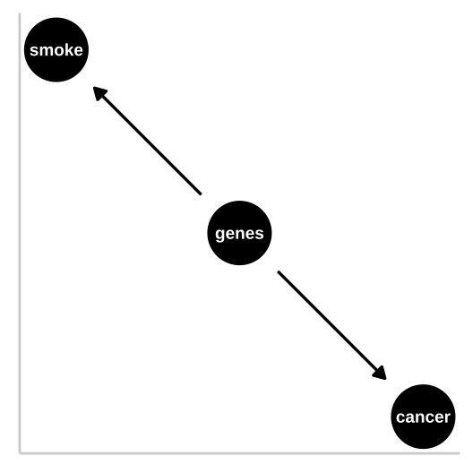

1.4. A soft intro to causal inference
Acknowledgments: see last slide
September 9, 2026
Quick recap
Last time:
Variables, data, dataset
Types of variables and subtypes: numeric (discrete, continuous), categorical (nominal, ordinal)
How to organize data in a dataset
Explanatory and response variables
Learning goals
- Describe the differences between observational and experimental studies.
- Distinguish between correlation and causation.
- Understand why experimental studies reveal causation, while observational studies cannot.
- Recognize that confounding factors limit our ability to interpret observed patterns.
Correlation \(\neq\) causation
Relationships between variables
A relationship exists between two variables if they co-vary (e.g., – increasing (excessive) sun exposure is accompanied by increasing numbers of events of skin cancer).
Both observational and experimental studies may detect relationships between variables – not the same as assigning a causative link.
Two ways to collect/obtain data
- A study is experimental if the researcher assigns treatments randomly to individuals, whereas a study is observational if the assignment of treatments is not made by the researcher.
Observational study
In observational studies, researchers do not assign treatments to individuals.
Researchers have no control over which units fall into which groups.
Relationships between explanatory and response variables can be detected.
But, these studies cannot prove causation or disentangle cause and effect. The main purpose of experiments is to accomplish this, though.
E.g. Tobacco smoking and development of lung cancer.
The magic of experiments
In experimental studies, researchers assign different treatment groups or values of an explanatory variable randomly to the individual units of study.
Well-conceived experiments can reveal causation!
E.g. clinical trials.

Image from The Lung Cancer Research Foundation.
Experimental studies may reveal confounds
- A well-designed experiment can remove confounds (except those that arise by chance!) and allows us to separate cause and effect !!!
But caution:
There are often more [or less] obvious biases.
Experimental artifacts can introduce bias.
E.g.: placebo effect – an improvement in medical condition that results form the psychological effects of treatment.
Appropriate controls are critical to a good experiment.
Placebo (Latin): “I shall please”, from placeō, “I please”. Read Interleaf 6 for more on the placebo effect.
Confounding Variables
Confounding Variables: unmeasured variable that changes in tandem with one or more of the measured variables, giving a false appearance of a causal association between the measured variables.
A confounding variable is a hidden bias. I.e., one of the major goals of experiments is to reduce bias.
I.e., they lead to a spurious association (correlation):
a mathematical relationship in which two or more events or variables are associated but not causally related, due to either coincidence or the presence of a certain third, unseen factor (confound variable, confounding variable, or lurking variable). Wikipedia Commons
Causal Inference

Example: smoking and lung cancer (1/3)
Say we saw a strong association between smoking and lung cancer from an observational study, and wanted to know if smoking causes cancer.
- let’s use a DAG (Directed Acyclic Graph) – the backbone of causal thinking! They allow us to lay our causal models out there for the world to see.

We could represent this causal claim with the simplest causal graph we can imagine. This is our first formal introduction to a Directed Acyclic Graph (hereafter DAG). This is Directed because WE are pointing a causal arrow from smoking to cancer. It is acyclic because causality in these models only flows in one direction, and its a graph because we are looking at it. Here we will largely use DAGs to consider potential causal paths. From Y. Brandvain’s Applied Biostats book.
Example: smoking and lung cancer (2/3)
- Hypothesis: A confound could underlie the strong statistical association between smoking and lung cancer.

R.A. Fisher – a pipe enthusiast, notorious asshole, eugenicist, and the father of modern statistics and population genetics was unhappy with this DAG. A confounding variable can bias our interpretation. Fisher proposed that the propensity to smoke and to develop lung cancer could be causally unrelated, if both were driven by similar genetic factors. Fisher’s causal model is presented in this DAG. From Y. Brandvain’s Applied Biostats book.
Example: smoking and lung cancer (3/3)
![A three-panel diagram labeled “a,” “b,” and “c” shows black circular nodes connected by directional arrows. In panel a, “genes” at the lower left points to “smoke” near the center, which points to “cancer” at the upper right. In panel b, “genes” on the left points directly to both “smoke” at the lower right and “cancer” at the upper right; “smoke” also points upward to “cancer.” In panel c, “environ” on the left points to both “smoke” at the top and “cancer” at the bottom; “genes” on the right points to “smoke” and “cancer,” and “smoke” points downward to “cancer.” The nodes are black circles with white text, and the arrows are black on a white background.](images/allthesmoke-1.png)
Three plausible DAGs concerning the relationship between smoking and cancer. a) Genes cause smoking, and smoking causes cancer. b) Genes cause cancer and genes cause smoking, and smoking causes cancer. c) Environmental factors cause smoking and cancer, and genetics cause smoking and cancer, while smoking too causes cancer. From Y. Brandvain’s Applied Biostats book.
What’s the conclusion?
We cannot perform experimental studies on humans to test this.
But causal associations were documented in other animal models.
Fisher turned out to be quite wrong – genes do influence the probability of smoking and genes do influence the probability of lung cancer, but smoking has a much stronger influence on the probability of getting lung cancer than does genetics.
In summary:
Observations reveal associations between variables.
An association doesn’t imply a causative link.
Spurious associations can occur when both are associated with a confounding variable.
Because researchers do not assign treatments in observational studies, observations cannot prove causation or disentangle cause and effect.
Comic moment
![[ [Cueball is talking to Megan.] Cueball: I used to think correlation implied causation. [Cueball lift his hand while continuing to talk to Megan.] Cueball: Then I took a statistics class. Now I don't. [Back to the same situation as the first frame.] Megan: Sounds like the class helped. Cueball: Well, maybe.]](https://imgs.xkcd.com/comics/correlation.png)
From: https://www.xkcd.com/552/. Correlation doesn’t imply causation, but it does waggle its eyebrows suggestively and gesture furtively while mouthing ‘look over there’.
Acknowledgments
Yaniv Brandvain (specifically, here, I used the smoking and cancer example from his book Applied Biostats); Freeman & Company; and Michael Whitlock for some materials used in these slides.
B215